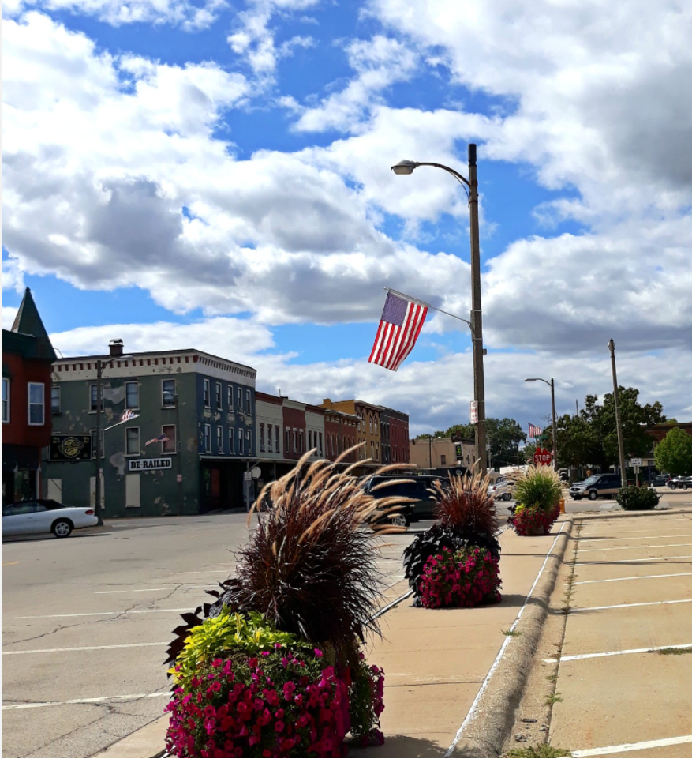

Like the entry had stated, I'm Arturo, and I'm a 3rd year student here at IIT.
I'm from a small town called Sandwich, IL. I was born and raised in that small town. I even graduated from Sandwich Community High School. It wasnt until 2020, when I had decided to resume my higher education that, I left my home town. Granted it was only about an hour and half away.
Even then though, mile wise, that's about 125-140 miles driven a day if I had decided to communte from there. If you have not heard of the town, I wouldn't be suprised, normally people chuckle at the fact that there is a town named "Sandwich".
There really isn't much to do in such a small town anyways, unless cornfields are your thing, then have at it. If anything, you have to commute 25-35 minutes out east to be able to do anything.
I come from an average sized family. Its my mom and dad, and then my younger brother and I. My brother is 21 and I'm 27. as well as, I have a daughter who's 7 years old. While I had chosen to go to IIT, my brother is going to ISU. Talk about going in the oppsite direction. Which actually makes coming home pretty easy since our parents and family members are right dab in-between both of us.
We have 3 dogs. Which include a Chow Chow, Pitbull and a Chihuahua. With the Chow Chow being our youngest at 1 year old, and the Chihuahua being about 16 years old. The pitbull is only about 3 years old.